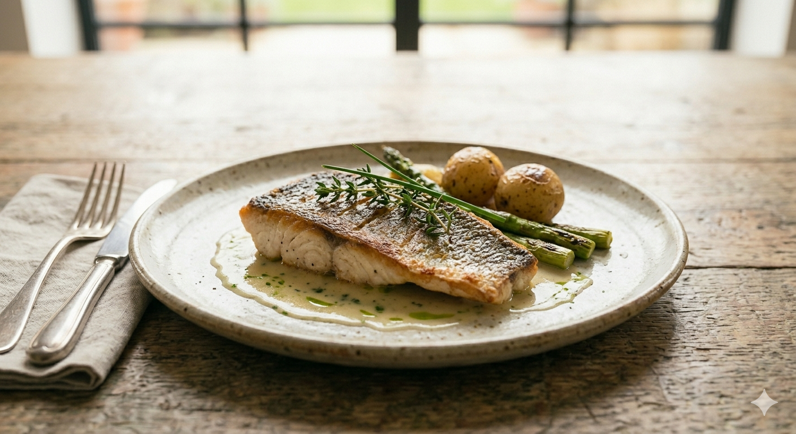
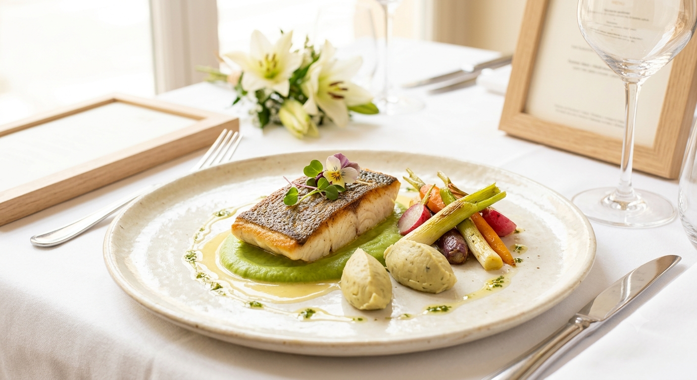
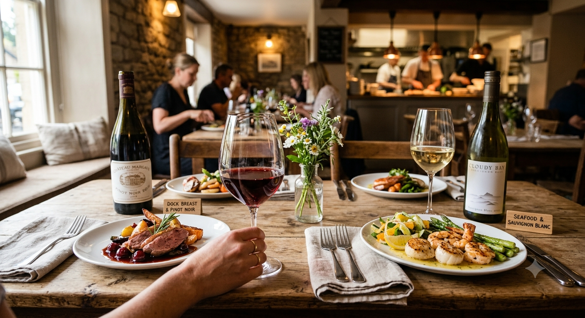

Chef Story
藤原 仁
山形・横浜・東京・そしてオーストラリアへ。多種多様な食文化に触れ、各国の厨房で腕を磨いた経験が、私の料理の礎となっています。
2019年、山形市七日町に「ラミ・デュ・ヴァン・エフ（ワインの友・F）」を開店。特別な日だけでなく、日常の中で「本当に美味しいフレンチ」を愉しめる場所を作りたい。その想いは今も変わりません。


L'ami du Vin F
最新鋭の調理器具と、世界を渡り歩いたシェフの感性。
肩肘張らない「カジュアル」の枠を超えた、
驚きと感動がここにあります。
SCROLL
Reservation
フレンチという芸術を、もっと身近に。
店主自らが厳選した旬の素材を、最新のウォーターバスや溶岩石グリラーで丁寧に仕上げる。
それは、作り手と食するあなたとの、料理を通した静かな対話です。

山形の暑い夏、そして厳しい冬。季節ごとの「最も美味しい状態」で届く真鯛を、皮目はパリッと、身は驚くほどふっくらと。 「フランス料理は生きる楽しみ」だと感じていただける、渾身の一皿です。
お客様の声から生まれた、お店をもっと楽しむためのアイデア。準備中の新サービスをご紹介します。
「少しずつ色々な前菜やメインを味わいたい」というお声にお応えし、お一人様でも気兼ねなくご注文いただける贅沢な小皿のペアリングプレートを開発中。
お誕生日や大切な日のサプライズに。メッセージとともに音と光で演出する、思い出に残る特別なデザートコースのオプションサービス。
山形・横浜・東京・そしてオーストラリアへ。多種多様な食文化に触れ、各国の厨房で腕を磨いた経験が、私の料理の礎となっています。
2019年、山形市七日町に「ラミ・デュ・ヴァン・エフ（ワインの友・F）」を開店。特別な日だけでなく、日常の中で「本当に美味しいフレンチ」を愉しめる場所を作りたい。その想いは今も変わりません。
「フランス料理は久しぶりでしたが、食すことが生きる上でこんなにも楽しみなのだと感じました。一言で言えば、感動です！」
— 山形の夏に感動されたお客様
「一品一品が芸術！そして驚くほどリーズナブル。本当に良い素材を丁寧に扱っているのがわかります。」
— グルメなお客様より
